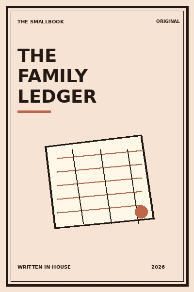

Library › Money & Finance
The Family Ledger - Summary & Key Lessons

Money becomes less frightening when a household can see it together, talk about it plainly and decide before pressure arrives.
📖 OPEN THE FULL INTERACTIVE BREAKDOWN →🌐 Read it in Hindi, Hinglish, Gujarati, Tamil & 22 more languages, with audio.
💡 The Big Idea
Money becomes less frightening when a household can see it together, talk about it plainly and decide before pressure arrives. The lessons below are designed to be used slowly: read one, try it in a real situation, and return with evidence rather than agreement.
🧠 The 8 Key Lessons
Lesson 1: Make Money Visible
Chapter 1: Make Money Visible
A shared view of income, fixed costs and obligations replaces blame with facts. Money becomes less frightening when a household can see it together, talk about it plainly and decide before pressure arrives. The useful question is not whether this is perfectly true in every situation, but what it helps you notice before you act. Most people skip this step because the visible task feels urgent. The book asks you to slow down long enough to identify the constraint, trade-off or relationship underneath the task. Once that is clear, a smaller and more reliable move becomes possible. Repeated over time, that move changes the system rather than merely decorating the surface of it.
📖 Example: Two siblings list rent, medicines and loan payments before arguing about a purchase. The point is not to copy the situation exactly. Notice the sequence: make the hidden condition visible, choose the next action that respects it, and then observe what happens. That turns a memorable story into a testable practice instead of a slogan. Read the full example →
⚡ Do this: Create one simple monthly page: money in, essentials, debt, savings and flexible spending.
Lesson 2: Separate Safety From Dreams
Chapter 2: Separate Safety From Dreams
Emergency money protects the family; goal money can take more risk. Mixing them creates panic. Money becomes less frightening when a household can see it together, talk about it plainly and decide before pressure arrives. The useful question is not whether this is perfectly true in every situation, but what it helps you notice before you act. Most people skip this step because the visible task feels urgent. The book asks you to slow down long enough to identify the constraint, trade-off or relationship underneath the task. Once that is clear, a smaller and more reliable move becomes possible. Repeated over time, that move changes the system rather than merely decorating the surface of it.
📖 Example: A family keeps medical reserves separate from a long-term education SIP. The point is not to copy the situation exactly. Notice the sequence: make the hidden condition visible, choose the next action that respects it, and then observe what happens. That turns a memorable story into a testable practice instead of a slogan. Read the full example →
⚡ Do this: Name one safety fund and one future goal, even if both begin small.
Lesson 3: Talk Before the Deadline
Chapter 3: Talk Before the Deadline
Financial conversations are easiest before a bill or emergency forces them. Money becomes less frightening when a household can see it together, talk about it plainly and decide before pressure arrives. The useful question is not whether this is perfectly true in every situation, but what it helps you notice before you act. Most people skip this step because the visible task feels urgent. The book asks you to slow down long enough to identify the constraint, trade-off or relationship underneath the task. Once that is clear, a smaller and more reliable move becomes possible. Repeated over time, that move changes the system rather than merely decorating the surface of it.
📖 Example: Parents discuss wedding expectations months ahead rather than borrowing in secret near the date. The point is not to copy the situation exactly. Notice the sequence: make the hidden condition visible, choose the next action that respects it, and then observe what happens. That turns a memorable story into a testable practice instead of a slogan. Read the full example →
⚡ Do this: Schedule a 20-minute money conversation before the next major due date.
Lesson 4: Respect Invisible Labour
Chapter 4: Respect Invisible Labour
Care work, home management and emotional support affect a household budget even when unpaid. Money becomes less frightening when a household can see it together, talk about it plainly and decide before pressure arrives. The useful question is not whether this is perfectly true in every situation, but what it helps you notice before you act. Most people skip this step because the visible task feels urgent. The book asks you to slow down long enough to identify the constraint, trade-off or relationship underneath the task. Once that is clear, a smaller and more reliable move becomes possible. Repeated over time, that move changes the system rather than merely decorating the surface of it.
📖 Example: A couple counts childcare costs and time before deciding who changes work hours. The point is not to copy the situation exactly. Notice the sequence: make the hidden condition visible, choose the next action that respects it, and then observe what happens. That turns a memorable story into a testable practice instead of a slogan. Read the full example →
⚡ Do this: List one unpaid responsibility that should be included in a money decision.
Lesson 5: Use a Cooling-Off Rule
Chapter 5: Use a Cooling-Off Rule
Large purchases deserve time because emotion is loud at the point of sale. Money becomes less frightening when a household can see it together, talk about it plainly and decide before pressure arrives. The useful question is not whether this is perfectly true in every situation, but what it helps you notice before you act. Most people skip this step because the visible task feels urgent. The book asks you to slow down long enough to identify the constraint, trade-off or relationship underneath the task. Once that is clear, a smaller and more reliable move becomes possible. Repeated over time, that move changes the system rather than merely decorating the surface of it.
📖 Example: A family waits 48 hours before buying a phone on EMI and finds a less costly option. The point is not to copy the situation exactly. Notice the sequence: make the hidden condition visible, choose the next action that respects it, and then observe what happens. That turns a memorable story into a testable practice instead of a slogan. Read the full example →
⚡ Do this: Set your household’s pause rule for purchases above a number you choose.
Lesson 6: Build Repair Capacity
Chapter 6: Build Repair Capacity
Small maintenance prevents big replacements and protects cash flow. Money becomes less frightening when a household can see it together, talk about it plainly and decide before pressure arrives. The useful question is not whether this is perfectly true in every situation, but what it helps you notice before you act. Most people skip this step because the visible task feels urgent. The book asks you to slow down long enough to identify the constraint, trade-off or relationship underneath the task. Once that is clear, a smaller and more reliable move becomes possible. Repeated over time, that move changes the system rather than merely decorating the surface of it.
📖 Example: Servicing a scooter on schedule avoids a costly breakdown during an urgent month. The point is not to copy the situation exactly. Notice the sequence: make the hidden condition visible, choose the next action that respects it, and then observe what happens. That turns a memorable story into a testable practice instead of a slogan. Read the full example →
⚡ Do this: Make a list of three things worth maintaining before they fail.
Lesson 7: Teach the Next Generation
Chapter 7: Teach the Next Generation
Children learn money from what adults explain and model, not from secrecy. Money becomes less frightening when a household can see it together, talk about it plainly and decide before pressure arrives. The useful question is not whether this is perfectly true in every situation, but what it helps you notice before you act. Most people skip this step because the visible task feels urgent. The book asks you to slow down long enough to identify the constraint, trade-off or relationship underneath the task. Once that is clear, a smaller and more reliable move becomes possible. Repeated over time, that move changes the system rather than merely decorating the surface of it.
📖 Example: A teenager sees a simple grocery budget and learns why discounts are not always savings. The point is not to copy the situation exactly. Notice the sequence: make the hidden condition visible, choose the next action that respects it, and then observe what happens. That turns a memorable story into a testable practice instead of a slogan. Read the full example →
⚡ Do this: Explain one household trade-off to a younger person without shame.
Lesson 8: Keep the Ledger Kind
Chapter 8: Keep the Ledger Kind
Numbers should support dignity, not become a weapon in conflict. Money becomes less frightening when a household can see it together, talk about it plainly and decide before pressure arrives. The useful question is not whether this is perfectly true in every situation, but what it helps you notice before you act. Most people skip this step because the visible task feels urgent. The book asks you to slow down long enough to identify the constraint, trade-off or relationship underneath the task. Once that is clear, a smaller and more reliable move becomes possible. Repeated over time, that move changes the system rather than merely decorating the surface of it.
📖 Example: When income drops, a family reviews options together instead of assigning moral failure. The point is not to copy the situation exactly. Notice the sequence: make the hidden condition visible, choose the next action that respects it, and then observe what happens. That turns a memorable story into a testable practice instead of a slogan. Read the full example →
⚡ Do this: End the next money conversation by naming one thing the household is already doing well.
✅ 5-Step Action Plan
- Create one simple monthly page: money in, essentials, debt, savings and flexible spending.
- Name one safety fund and one future goal, even if both begin small.
- Schedule a 20-minute money conversation before the next major due date.
- List one unpaid responsibility that should be included in a money decision.
- Set your household’s pause rule for purchases above a number you choose.
⚠️ When This Doesn't Work
A book can offer a useful lens, not a universal rule. Your money, health, family duties, workplace power and access to support change what is possible. Keep the principle, adapt the practice, and ask for expert help where the stakes are high.
💀 The Graveyard Proves It
💬 Best Quotes from The Family Ledger
- “Money becomes less frightening when a household can see it together, talk about it plainly and decide before pressure arrives.”
- “Small, honest experiments are more useful than impressive intentions.”
- “A good idea becomes valuable only when it changes the next choice.”
Interactive version: mark lessons as read, listen in your language, share quote cards.